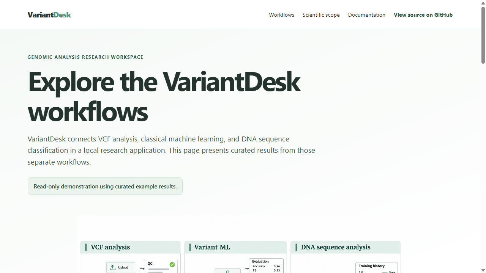
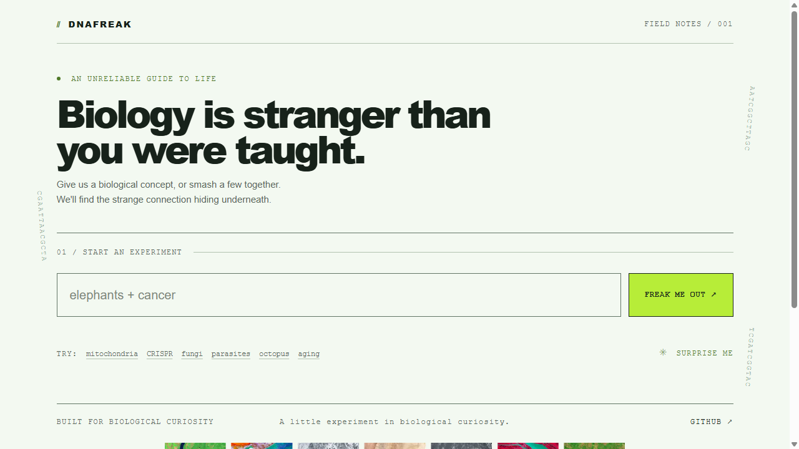

Computational genomics
Genomic sequence, variation, transcriptomics, and computational approaches to studying the information contained in biological data.
#genomics#transcriptomics
BIOINFORMATICS · COMPUTATIONAL BIOLOGY
I'm an MSc Bioinformatics student at REVA University, working across computational genomics, machine learning, and reproducible biological analysis. I'm curious about what algorithms and models can reveal about biological data, why some predictions hold up while others don't, and what those differences can tell us about biology.
I started out studying genetics, microbiology and biochemistry. My move towards bioinformatics happened gradually, as I became more interested in taking a biological question, exploring the data myself, and writing code to test what I was seeing.
That is still what I enjoy most about research. I like following an unexpected result, figuring out why a model behaves the way it does, or building a workflow that makes an analysis easier to reproduce. I'm interested in developing computational methods that are useful to researchers while remaining careful about the biology they are meant to represent.
Genomic sequence, variation, transcriptomics, and computational approaches to studying the information contained in biological data.
Foundation models, representation learning, and generalization. I'm interested in uncertainty estimation, causal inference, and how modelling perturbations can help generate hypotheses and guide experiments.
Proteins, proteomics, microbial systems, and disease biology. I enjoy connecting different kinds of evidence to understand what computational results mean in a biological context.
Outside research, I have a soft spot for entrepreneurship and building things. I like thinking about why some ideas work, what makes them useful, and everything that happens between having an idea and getting it into people's hands. Design, economics, policy, geography, scale, distribution, and all the messy parts in between interest me. I also enjoy drawing connections between history, philosophy, and science.
That way of thinking sometimes finds its way back into how I approach research and scientific tools.
I enjoy learning languages, too. I speak English, Hindi, Marathi, Kannada, and Telugu, and I'm currently learning Mandarin.
Using publicly available RNA-seq data (GSE290979) from 31 spinal cord organoids, I'm examining transcriptional responses to SMN-targeting treatment in SMA. The analysis compares healthy controls, untreated and scramble-treated SMA samples, and morpholino-treated samples to investigate differential gene expression and pathways related to neuronal development, RNA processing, and synaptic function. Comparisons between SMA donor lines also examine variability in treatment response.
This review examines the scientific capabilities expected of biological AI beyond predictive performance. I'm studying how biological foundation models, causal inference, mechanistic interpretability, uncertainty estimation, and perturbation modelling are approached across different research communities. The work explores how these ideas relate to hypothesis generation, mechanistic reasoning, and intervention planning, and whether they can be understood within a common conceptual framework.
I'm planning a reproducible Nextflow workflow for liquid-biopsy sequencing that combines UMI-aware error suppression, consensus read generation, and low-frequency somatic variant detection with cell-free DNA fragmentomics. The proposed analysis will examine fragment-length distributions and fragment-end patterns alongside variant-level evidence, while accounting for sequencing errors, germline variation, and clonal hematopoiesis as potential sources of misleading signals.
I compared six genomic foundation models using 6,960 ClinVar single-nucleotide variants from ten LGMD-associated genes, evaluating frozen representations, supervised adaptation, and sequence contexts of 101, 201, and 501 bp. I also examined gene-held-out performance and shared prediction errors, while evaluating GPN-Star V100 and AlphaGenome Atlas AVI separately using their native scores. Longer contexts improved performance for most frozen architectures, with Evo2 reaching an MCC of 0.864 at 501 bp. The findings concern classification against ClinVar labels, not established clinical utility.
Genomic foundation models learn representations from DNA sequence, although their usefulness for variant classification depends on the architecture and downstream evaluation procedure. We compared six genomic foundation models using 6,960 ClinVar single-nucleotide variants from ten limb-girdle muscular dystrophy (LGMD)-associated genes, with 4,866 variants assigned to training and 2,094 to held-out testing. The analyses included frozen alternate-minus-reference embeddings at 101, 201 and 501 bp, supervised adaptation at 101 bp, and gene-held-out downstream classifier training. GPN-Star V100 and AlphaGenome Atlas AVI were evaluated separately using their native scores. At 101 bp, frozen Evo2 achieved the highest discrimination among the six foundation models (MCC 0.644; AUROC 0.879; AUPRC 0.818). Supervised adaptation increased MCC for three architectures and reduced it for the remaining three. Extending sequence context to 501 bp improved all three primary metrics in five of six frozen architectures, with Evo2 reaching an MCC of 0.864, AUROC of 0.964 and AUPRC of 0.952. Evo2 also led the frozen gene-held-out readouts (pooled MCC 0.641; AUROC 0.852; AUPRC 0.789). GPN-Star V100 and AVI achieved MCC values of 0.929 and 0.938, respectively, using distinct biological inputs and scoring procedures. The number of variants misclassified across all evaluated configurations decreased from five under the original 101-bp readouts to one after including longer contexts and native scores. An exploratory HGVS-category control identified substantial annotation-associated structure in the benchmark labels. The findings characterize classification performance against aggregate ClinVar labels within LGMD-associated genes. Disease-specific pathogenicity and clinical diagnostic utility remain untested.
Collaborative research · with Isha Vats, IIT Roorkee
This study compared frozen ESM-2 and ProtBERT representations across four classifiers using 15,794 bacterial proteins organized into 2,688 homology components, and adapted three ESM-2 configurations using LoRA. Homology-disjoint and Group-OOD evaluations revealed differences between aggregate classification performance and recall across withheld biological groups.
Applying selected checkpoints to six ESKAPE proteomes identified 552 hypothetical-protein candidates for subsequent Swiss-Prot and InterProScan evidence analysis. These annotations provide functional context without establishing resistance activity or protein novelty.
Protein language models have shown promise for classifying antimicrobial resistance (AMR)-associated proteins, but the effects of supervised adaptation and generalization across distinct resistance groups remain uncertain. We compared frozen ESM-2 and ProtBERT representations across four classifiers using 15,794 bacterial proteins organized into 2,688 homology components. Three ESM-2 architectures were further trained with low-rank adaptation (LoRA), with selected frozen and adapted checkpoints evaluated on an independent homology-disjoint test set and a biologically grouped out-of-distribution (Group-OOD) partition. Paired component-bootstrap confidence intervals quantified changes in Matthews correlation coefficient (MCC), and block-level recall was assessed across 24 withheld biological groups. LoRA increased test MCC for the MLP and multiscale CNN but reduced it for the BiLSTM-Transformer; all three paired 95% confidence intervals included zero. The frozen BiLSTM-Transformer achieved the highest Group-OOD MCC (0.6584), yet its positive-class recall of 73.5% corresponded to a block-macro recall of 24.8%, with zero recall in 18 of 24 blocks. Six selected checkpoints were subsequently applied to 24,855 eligible proteins from six ESKAPE reference proteomes. Among 552 model-positive proteins carrying hypothetical-protein descriptions and lacking AMRFinderPlus annotations, 346 had Swiss-Prot sequence matches, 507 had mapped InterPro entries, and 52 were identical over their full lengths to reviewed sequences. These annotations provided functional context without establishing resistance activity or protein novelty. The findings show that classification performance varied with downstream architecture and evaluation structure, supporting assessment of biologically withheld groups alongside homology-aware testing.
I extended superinformation analysis to 14 Sequence Ontology-defined genomic feature classes across seven species and seven block sizes ranging from 20 to 200 bp. The study examined changes in local entropy heterogeneity across sequence scales, compared observed profiles against randomized and GC-controlled null models, and summarized feature-level patterns using characteristic information scales and persistence scores. Most evaluable profiles showed non-increasing superinformation with increasing block size, although this pattern was not universal.
Genomic sequence organization varies across spatial scales, but sequence complexity measures are often evaluated at a single resolution. Superinformation (SI), introduced by Bose and Chouhan, measures heterogeneity in local sequence entropy by taking the entropy of the distribution of block-level Shannon entropy values. We characterize SI across 14 Sequence Ontology-defined genomic feature classes in seven species and seven block sizes from 20 to 200 bp. SI profiles were non-increasing for 72 of 86 evaluable species-feature combinations, although this pattern was not universal. Observed SI generally exceeded both a block-count-controlled random null and a species-level GC-controlled null. Associations with mononucleotide entropy, dinucleotide entropy, and GC content were modest, with no individual descriptor explaining more than 10.4% of the observed variation. For the 13 complete feature-level profiles used in geometric analysis, the first two principal components explained 97.859% of the variance, and hierarchical clustering grouped features with similar SI trajectories. We also summarize the profiles using the Characteristic Information Scale and Information Persistence Score. These analyses extend the original superinformation framework to a comparative, multiscale analysis of genomic feature heterogeneity while keeping the interpretation of SI limited to the sequence properties measured here.
I analysed original 16S rRNA amplicon sequencing data from upstream, midstream, and downstream water samples collected along the Godavari River in Nashik, India. Using QIIME 2, DADA2, SILVA, and PICRUSt2, I examined microbial community diversity and inferred functional profiles. KEGG Orthology annotations and environmental literature were then used to investigate stress-associated patterns involving oxidative stress, membrane transport, metal-ion homeostasis, and other cellular responses. These findings generate environmental hypotheses without establishing contamination by any specific pollutant.
Freshwater ecosystems harbour diverse microbial communities that play important roles in nutrient cycling, ecological stability, and environmental adaptation. Understanding how these communities are structured and what functional capabilities they potentially possess can provide valuable insights into the ecological conditions of aquatic environments. This study investigates the microbial community composition and predicted functional potential of water samples collected from three locations along the Godavari River in Nashik, Maharashtra, India, representing upstream, midstream, and downstream sampling points.
16S rRNA gene amplicon sequencing was performed to characterize microbial diversity and community composition. The sequencing data were processed using a QIIME 2-based analytical workflow, incorporating DADA2 for sequence denoising and SILVA-based taxonomic classification. Alpha diversity metrics were used to characterize microbial diversity, while PICRUSt2 was employed to infer potential functional capabilities from the taxonomic profiles.
Although the predicted functional landscape was primarily characterized by core metabolic processes, further investigation identified a subset of stress-associated functional patterns involving oxidative stress defense, DNA replication and repair, protein stress responses, membrane transport, metal-ion homeostasis, and metabolic adaptation. These functional patterns were subsequently examined through KEGG Orthology-based annotation, mechanistic classification, and comparative evaluation against environmental stress mechanisms reported in the literature.
This analysis provided a framework for exploring multiple environmental hypotheses, including polyethylene-associated exposure, heavy-metal contamination, and organic pollutant stress. Rather than attributing the observed microbial functional patterns to any particular pollutant, the study uses these observations to identify biologically plausible mechanisms and formulate testable hypotheses for future investigation.
Overall, this work presents an exploratory framework for integrating microbial community profiling, predicted functional architecture, and environmental literature to investigate potential ecological stressors in freshwater ecosystems. It also establishes a foundation for subsequent validation through targeted environmental measurements and comparative microbiome studies.
Collaborative research · with Isha Vats, IIT Delhi
This project combined protein language models, structural information, and immunological evidence to evaluate viral glycoproteins. The first phase used ESM-2 in a multitask setting to predict mutation-associated stability changes and protein solubility, with homology-aware training and evaluation.
Downstream analyses incorporated structure-aware sequence assessment and independent antigenicity, protective-antigen, B-cell, and T-cell evidence, with applications to Zika and Chandipura viral glycoproteins.
A Nextflow workflow for bulk RNA-seq covering read quality control, STAR alignment, gene quantification with featureCounts, optional DESeq2 analysis, and transcript discovery using StringTie and CPC2, with integrated QC reporting.
A Nextflow workflow supporting Oxford Nanopore and PacBio Iso-Seq data, with platform-specific preprocessing, splice-aware alignment, IsoQuant transcript reconstruction, SQANTI3 structural characterization, and optional comparisons with alternative transcript callers.
A reproducible Nextflow workflow for gene set enrichment analysis from either raw gene counts or pre-ranked lists. It supports DESeq2-based differential expression, gene ranking, fgsea enrichment, and visualizations exported as PNG and PDF.
A Nextflow workflow for human short-read whole-genome sequencing, supporting germline and matched tumour-normal variant calling, multiple variant callers, benchmarking, caller concordance, optional SV/CNV analysis, VEP annotation, and reproducible reporting.
A reproducible human mitochondrial genome workflow incorporating standard and shifted-coordinate analysis, mitochondrial variant calling with Mutect2 and mutserve2, NUMT-aware evaluation, haplogroup assignment, contamination assessment, and integrated reporting.
A Nextflow workflow integrating RNA-seq, ATAC-seq, WGBS, and H3K27ac ChIP-seq. It combines assay-specific results into promoter, chromatin, and candidate regulatory-link evidence while retaining provenance, validation records, and explicit uncertainty.
An interactive research platform combining VCF quality control and allele-aware feature extraction with machine learning classification, clustering, and separate DNA sequence modelling workflows. The public demonstration presents curated results; full analysis runs locally.

DNAFreak started as a place for me to explore the strange and fascinating side of biology. I plan to develop it into an open-source knowledge platform where unusual biological mechanisms, unexpected connections, and curious questions can be explored and shared.

Sarvesh Galgale · Rida Zainab · Pradeep Kumar A. · Nithya M. · Susha D. · Sameer Sharma
International Journal of Applied Pharmaceutics · 2023 · Volume 15 · Issue 6 · Pages 297–308
Sarvesh Galgale · Isha Vats · Agnik Haldar
bioRxiv · 2026
Sarvesh Galgale · Isha Vats · Josna Wilson · Agnik Haldar
bioRxiv · 2026 · Submitted for journal publication
Presented as a poster at REDRESS 2025 (Rare Genetic Diseases Research Summit), held 27–28 November 2025 · Tata Institute for Genetics and Society (TIGS), inStem Building, NCBS Campus, Bengaluru.
Sarvesh Galgale · P. Sharma
bioRxiv · 2026 · Submitted for journal publication
Presented as a poster at Genomics India Conference 2025, held 12–14 August 2025 · J. N. Tata Auditorium, Indian Institute of Science (IISc), Bengaluru.
Sarvesh Galgale · Isha Vats · Agnik Haldar
Review manuscript · Under peer review
Machine learning (ML) now supports biological prediction across molecular, cellular, and systems scales, but predictive accuracy alone does not establish biological understanding. The scientific value of an ML result depends on how a biological question is translated into data, representations, model objectives, evaluation procedures, and interpretive claims. This review examines biological ML as a form of scientific modelling and asks what kinds of biological knowledge predictive models can support. We distinguish prediction from explanation, examine how abstraction and representation shape inference, and identify points at which biological meaning can be altered across ML workflows. Particular attention is given to representation learning, interpretability, data leakage, out-of-distribution generalization, and benchmark design. AlphaFold and foundation-model approaches to perturbation prediction are used as contrasting case studies to show how scientific value depends on the biological target, data regime, representation, evaluation, and available validation. We then examine approaches that more closely connect ML with biological modelling, including biologically informed representations, mechanistic-ML integration, constraint-informed learning, interpretability as hypothesis generation, and claim-aligned evaluation. Finally, we develop a claim-evidence framework for prediction, generalization, representation, prioritization, hypothesis generation, explanation, and intervention. Biological ML should therefore be evaluated not only by predictive performance, but by whether the available evidence supports the biological claim being made.